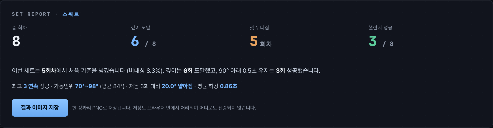

USER NEED
02 · 사용자 니즈
필요한 건 더 많은 운동 영상이 아니라, 내 자세를 봐주는 눈입니다.
이미 방법은 넘칩니다. 부족한 건 내가 지금 그 방법대로 하고 있는지 알려주는 피드백입니다. 그런데 기존 방식은 저마다 한 군데씩 막혀 있습니다.
지금까지의 방법
- 거울 — 힘든 순간엔 볼 여유가 없고, 지나간 자세는 남지 않는다
- 영상 촬영 — 매번 찍고 되돌려 보는 게 번거로워 3일이면 멈춘다
- AI 코칭 앱 — 영상을 서버로 올려야 해서, 운동복 차림 영상을 맡기기 꺼려진다
- PT — 효과는 확실하지만 비용과 시간이 든다
되감기가 채우는 자리
- 힘든 회차일수록 자동으로 잡아 둔다 — 볼 여유가 없어도 된다
- 링크만 열면 끝. 설치·가입·촬영 버튼이 없다
- 브라우저 안에서 계산해 영상이 기기 밖으로 나가지 않는다
- 무료로 매일. 판단 근거를 숫자로 보여준다
핵심 니즈 한 줄
“운동을 대신 짜주지 말고, 내가 지금 무너지고 있다는 사실만 제때 알려 달라.” 되감기는 프로그램을 처방하지 않습니다. 관찰만 합니다.
매일 홈트 자세가 맞는지 확인하는 게 너무 귀찮다
→ AI로 무너진 순간만 잡아 되돌려 보여주는 되감기
되감기 REWIND
02 / 05
SERVICE CONCEPT
03 · 서비스 컨셉
거울은 지금만 보여줍니다. 되감기는 무너진 순간을 남깁니다.
웹캠 앞에서 운동하면 전신 관절 33점을 매 프레임 추정하고, 세 개의 각도를 계산합니다. 기준을 넘긴 프레임은 자동으로 저장됩니다. 세트가 끝나면 몇 회차에서 어떤 값으로 무너졌는지가 그림과 숫자로 남습니다.
MEASURE 01
무릎 각도
고관절–무릎–발목이 이루는 각. 90° 이하로 내려가야 깊이를 인정합니다. 회차별 최저값을 기록해 세트 후반의 깊이 저하를 잡아냅니다.
MEASURE 02
상체 기울기
어깨–고관절 선이 수직에서 벗어난 각. 55°를 넘으면 허리로 무게가 옮겨간 신호로 보고 경고합니다.
MEASURE 03
좌우 비대칭
양쪽 골반의 높이차를 어깨너비로 나눈 비율. 8%를 넘으면 한쪽으로 체중이 쏠린 것으로 판단합니다.
STEP 01
링크를 연다
설치도 가입도 없습니다. 브라우저만 있으면 됩니다.
STEP 02
옆으로 서서 한 세트
카메라에서 2m. 화면에 각도가 실시간으로 뜹니다.
STEP 03
경고 프레임 자동 저장
가장 심하게 무너진 프레임만 회차당 한 장.
STEP 04
세트 후 증거 확인
“8회차 · 비대칭 14.6% · 깊이 98°”
뒤집은 지점
기존 운동 앱은 잘한 것을 세어 동기를 줍니다. 되감기는 무너진 것을 남겨 다음 세트를 바꿉니다. 기록이 아니라 증거를 만듭니다.
되감기 REWIND
03 / 05
PROTOTYPE
04 · 프로토타입 · 실제 동작
시나리오 재생이 아닙니다. 브라우저 안에서 실제로 추론이 돕니다.
MediaPipe Pose Landmarker를 WebAssembly로 브라우저에서 직접 실행합니다. 서버가 없어 영상 프레임이 기기를 떠나지 않습니다.

실시간 계측 — 관절 33점을 추정하고, 무릎 사잇각과 고관절의 수직 기준선을 화면 위에 직접 그립니다.

세트 리포트 — 총 회차·깊이 도달·첫 무너짐 회차에 더해, 가동범위와 처음 3회 대비 몇 도 얕아졌는지까지 남습니다.

세트 종료 후 증거 — 회차가 쌓일수록 각도가 무너지고 깊이는 얕아집니다. “몇 개 했는지”가 아니라 “몇 번째에 무너졌는지”가 남습니다.
카메라를 켜지 않아도 됩니다. 합성 관절 좌표를 동일한 계산 파이프라인에 통과시키는 시연 모드가 있어, 권한 없이도 카운트·경고·캡처가 그대로 동작합니다. 스쿼트·푸시업·런지·벤치프레스·점핑잭·플랭크·목 스트레칭 7종이 같은 코드로 돕니다.
되감기 REWIND
04 / 05
BUSINESS & IMPACT
05 · 사업성과 확장
봐주는 눈은 생기되, 영상은 어디로도 가지 않습니다.
운동 영상은 가장 올리기 꺼려지는 데이터입니다. 되감기는 서버를 두지 않는 것을 기능이 아니라 원칙으로 삼아, 기존 AI 코칭 서비스가 넘지 못한 심리적 장벽을 지웁니다.
B2C종목 확장
스쿼트·푸시업·런지·벤치프레스·점핑잭·플랭크·목 스트레칭 7종이 이미 동작합니다. 종목마다 재는 3점 각도와 임계값만 바꾸면 되므로 확장 비용이 낮습니다.
B2B시설·기업
무인 헬스장, 공공 체육시설, 기업 사내 운동 프로그램에 임베드. 영상 저장이 없어 시설 측의 개인정보 부담이 없습니다.
B2G재활·고령층
보건소 운동 프로그램, 노인 낙상 예방 체조의 수행 정확도 점검. 좌우 비대칭 지표는 보행·균형 평가로 이어집니다.
IMPACT 01
부상 예방
잘못된 자세를 몇 주씩 반복하기 전에, 첫 세트에서 잡습니다.
IMPACT 02
지속률
“맞게 하고 있다”는 확인이 생기면 운동을 그만둘 이유 하나가 사라집니다.
IMPACT 03
프라이버시
온디바이스 추론은 감시 없는 피드백이 가능하다는 사례가 됩니다.
AI가 “알아서 판단”하지 않습니다. 무엇을 어떻게 쟀는지 화면에 그대로 띄웁니다.
되감기 REWIND · 제1회 일상뒤집기 AI 어플 아이디어 공모전
05 / 05